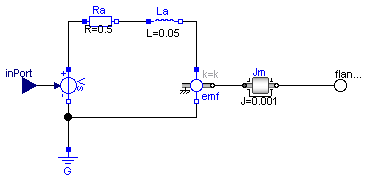
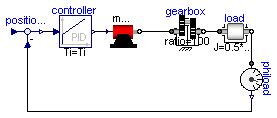
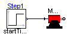

Extends from Modelica.Icons.Package (Icon for standard packages).
| Name | Description |
|---|---|
| Motor | A basic model of an electrical dc motor. |
| MotorDrive | |
| TestMotor |
A basic model of an electrical dc motor.

A basic model of an electrical dc motor.
| Type | Name | Description |
|---|---|---|
| input RealInput | inPort | |
| Flange_b | flange_b |

| Type | Name | Default | Description |
|---|---|---|---|
| Radius | r | 0.5 | Radius of load [m] |
| Mass | m | 80 | Mass of load [kg] |
